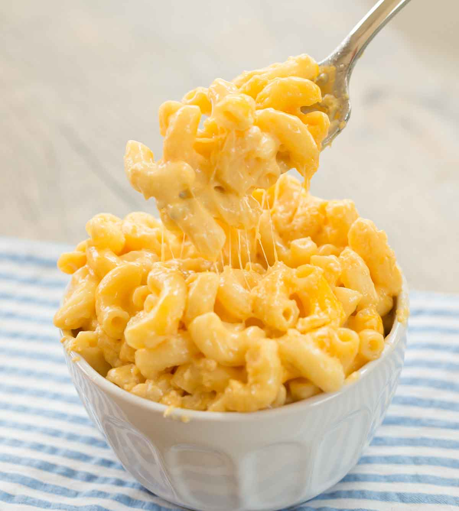

Macaroni and Cheese

Description
Put down the boxed mac & cheese, get ready to make your own, and never look back! The cheddar
in this recipe pops out beautifully and greatly complements the pasta. For added flavor, you
can top with breadcrumbs or shreeded greens, but the recipe won't be going into that.
Ingredients
- Macaroni
- Milk
- Butter
- Cheddar cheese
Steps
- Begin cooking the macaroni in a pot
- Drop the butter into the pot
- Pour milk as the macaroni cooks and stir
- Shred the cheddar cheese
- Once the macaroni are cooked, add in the shreeded cheese and mix